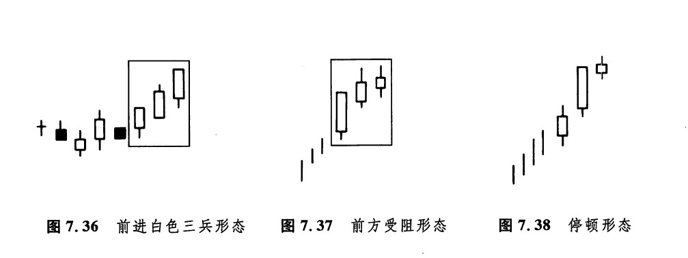
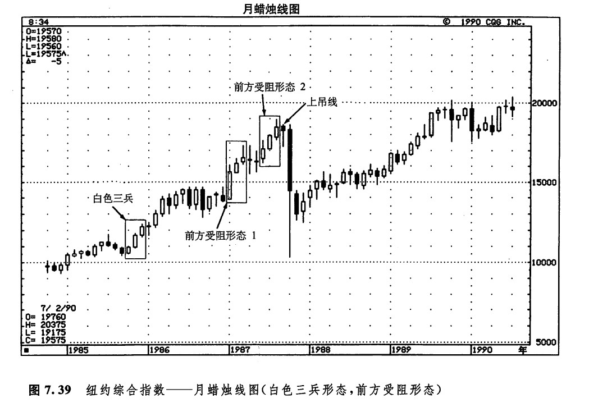
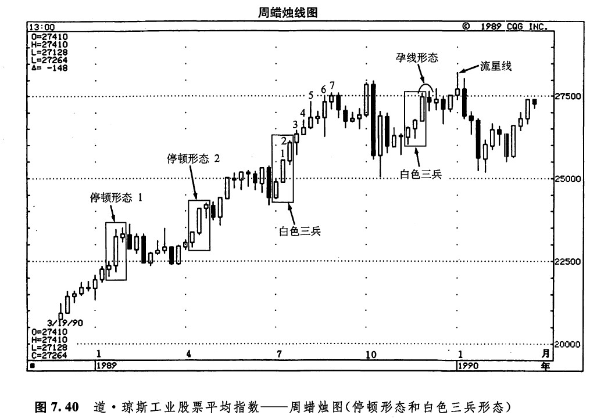
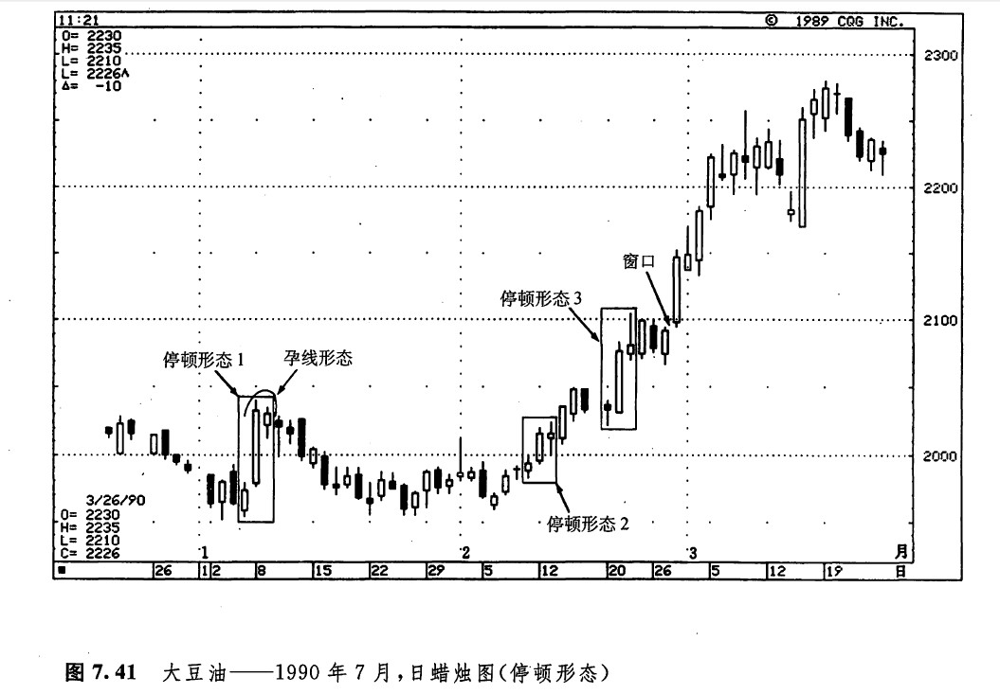

很多蜡烛图技术术语都与战争结下了不解之缘，本形态就是一个典型的例证。人们把这种形态称为前进白色三兵形态（如图7.36所示），或者更简洁一点，叫作白色三兵形态。本形态由接连出现的三根白色蜡烛线组成，它们的收市价依次上升。当市场在某个低价位稳定了一段时间后，如果出现了这样的形态，就标志着市场即将转强。
白色三兵形态表现为一个逐渐而稳定的上升过程，其中每根白色蜡烛线的开市价都处于前一天的白色实体之内，或者处在其附近的位置上；每一根白色，蜡烛线的收市价都应当位于当日的最高点或接近当日的最高点。这是一种很稳健的市场攀升方式（不过，如果这些白色蜡烛线伸展得过长，那么我们也应当对市场的超买状态有所戒备）。
如果其中第二根和第三根蜡烛线，或者仅仅是第三根蜡烛线，表现出上涨势头减弱的迹象，就构成了一个前方受阻（白色三兵）形态（如图7.37所示）。这就意味着这轮上涨行情碰到了麻烦，持有多头头寸者应当采取一些保护性措施。特别是在上升趋势已经处于晚期阶段时，如果出现了前方受阻形态，则更得多加小心。在前方受阻形态中，作为上涨势头减弱的具体表现，既可能是其中的白色实体一个比一个小，也可能是后两根白色蜡烛线具有相对较长的上影线。
如果在后两根蜡烛线中，前一根为长长的白色实体，并且向上创出了新高，后一根只是一个小的白色蜡烛线，那么就构成了一个（白色三兵）停顿形态（如图7.38所示）。有时候，这种形态也称为（白色三兵）深思形态。当这一形态出现时，说明牛方的力量至少暂时已经消耗尽了。在本形态中，最后一根小的白色蜡烛线既可能从前一根长长的白色蜡烛线向上跳空（在这种情况，该蜡烛线就变成了一根星线），也可能如同日本分析师所描述的那样，“骑在那根长长的白色蜡烛线实体的肩上”（这就是说，位于前一根长的白色实体的上端）。这根小小的实体暴露了牛方能量的衰退。当停顿形态发生时，便构成了多头头寸平仓获利的紧要时机。

虽然前方受阻形态与停顿形态在一般情况下都不属于顶部反转形态，但是有时候，它们也能引出不容忽视的下跌行情。我们应当利用前方受阻形态和停顿形态来平仓了结已有的多头头寸，或者为多头头寸采取保护措施（比如说，卖出与多头头寸相当的买权期权合约），但是不可据之开立空头头寸。一般来说，如果这两类形态出现在较高的价格水平上，则更有预测意义。
如图7.39所示，1985年，市场在较低价格水平上形成了一个白色三兵形态，它引发了一轮上涨行惰。在这个形态之后，还出现了两个前方受阻形态。前方受阻形态1出现在1987年初，其中的白色实体一蟹不如一蟹，给当前的上涨行情罩上了一层阴影。在这个三蜡烛线群体中，最后那根小白色实体是一根流星线。在随后的几个月里，市场裹足不前，形成了几根十字线。在这些十字线之后，价格叉开始向上推进，但是下一个前方受阻形态再度发出了警告信号。前方受阻形态2形成于1987年年中。这个三蜡烛线形态与前方受阻形态1的主要区别是，在本形态中，最后那根白色蜡烛线具有较长的上影线。这根上影线并不算非常长，但是它足以说明，市场没有力量在当前的最高点附近收市。换句话说，这群先头部队（即挺进的三兵）遭到了“阻击”。下一个月，出现了一根上吊线。于是，进攻的一方开始撤退。

在本例的前方受阻形态2出现后，我们还有其他的理由怀疑市场能否进一步上涨。1985年的白色三兵形态是从低价位出发的，但是，这个前方受阻形态的三根白色蜡烛线则出现在市场已经经历了长期的上涨过程之后。
如图7.40所示，1989年初，停顿形态1暂时中断了价格爬升的进程。另一方面，本形态也是在一个长期的白色蜡烛线系列之后出现的。

停顿形态2仅仅将当时的上涨行情阻滞了一两周。在这个深思形态中，最后那根小的白色实体是一根上吊线。两周之后，一旦市场的收市价向上超越了上吊线的最高点，市场便不太可能再下跌了。7月初，图示坚挺的白色三兵形态开始了一段气势不凡的上冲行情。在这段行情中，连续出现了7个新高（即7个新纪录高点）。1989年第三季度，又出现了另一个白色三兵形态。这个形态与7月份的白色三兵形态类似，在其中三根白色蜡烛线上，它们的收市价均处于各自的最高点，因此，从该形态各个方面的特征来看，都预示着新的一轮强劲的上涨行情的到来。但是，实际情况并非如此。在其中第三根白色蜡烛线之后一星期，市场上出现了一个小实体，它与前一根蜡烛线组成了一个孕线形态。由此可见，当前的上升趋势已经遇上了麻烦。几周以后，又出现了一颗流星，这就证实市场在当前的高价位上的确有问题。
如图7.41所示，这里先后出现了三个停顿形态。在停顿形态1中，同时还形成了一个孕线形态，它使当前的上冲行情短路了。停顿形态2没有使当时的上升趋势受到什么阻碍。在停顿形态3中，包含了一根流星线。停顿形态3的出现，导致了市场趋势的短暂变化，市场从上升转化为为期几个星期的横向延伸。请记住，在通常情况下，停顿形态并不是一个趋势反转信号，这类形态的出现，常常意味着市场需要一段深思熟虑的时间，以便决定下一步的方向。拿停顿形态3的情况来说，在横向调整区间完成之后，市场向上打开了一个窗口，形成了一个高价跳空突破形态。这个结果显示，市场的坚挺力道已经恢复。

下一篇：分手蜡烛线形态
上一篇：上升三法和下降三法形态